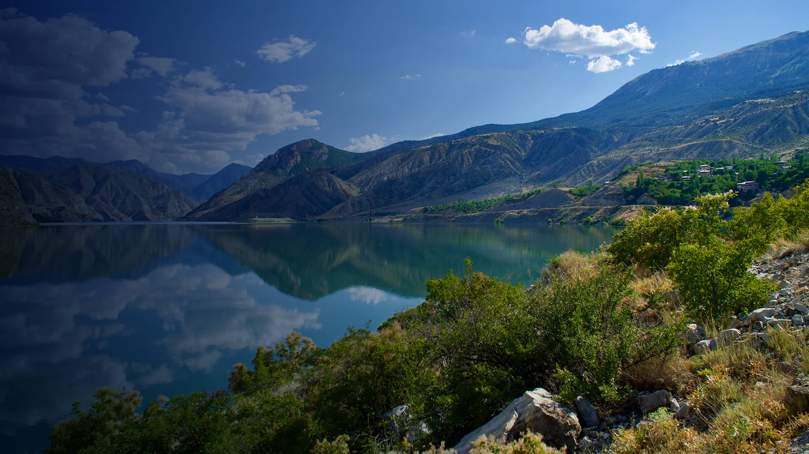
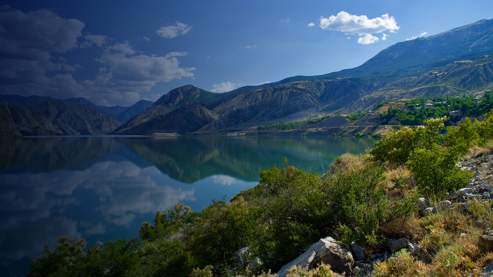

Erzurum
Erzurum is a historic city located in the Eastern Anatolia Region of Turkey, renowned for its rich cultural heritage and stunning natural beauty. Situated at an altitude of over 1,900 meters, Erzurum experiences a continental climate with cold winters and mild summers.
With a history dating back thousands of years, Erzurum has been a crossroads of civilizations, leaving behind a legacy of diverse architectural styles and cultural influences. One of the city's most famous landmarks is the Erzurum Castle (Erzurum Kalesi), built during the Byzantine period and later expanded by various rulers, including the Seljuks and Ottomans.
Erzurum is also known for its distinctive cuisine, which includes hearty dishes suited to its cold climate. Specialties such as "çılbır" (poached eggs in yogurt) and "cağ kebabı" (skewered meat cooked over an open flame) are popular among locals and visitors alike.
For outdoor enthusiasts, Erzurum offers ample opportunities for adventure. The Palandöken Mountain range, located just outside the city, is a popular destination for skiing and snowboarding enthusiasts, with world-class facilities and breathtaking vistas.
History buffs will find plenty to explore in Erzurum's museums and historical sites. The Atatürk House Museum, located in the house where Mustafa Kemal Atatürk, the founder of the Turkish Republic, stayed during the War of Independence, offers insights into his life and legacy.
The Çifte Minareli Medrese (Twin Minaret Madrasa) is another architectural gem worth visiting, known for its intricate Seljuk design and decorative tilework. Dating back to the 13th century, it stands as a testament to Erzurum's rich Islamic heritage.
For those interested in religious history, the Three Tombs (Üç Kümbetler) complex houses the tombs of three Seljuk princes, adorned with exquisite stone carvings and decorative motifs.
Overall, Erzurum captivates visitors with its blend of history, culture, and natural beauty. Whether skiing down snowy slopes, exploring ancient landmarks, or savoring local delicacies, Erzurum offers a memorable experience for travelers seeking to immerse themselves in Turkey's eastern charm.
 
